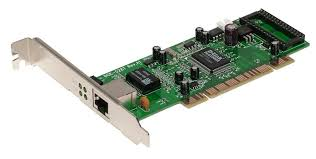
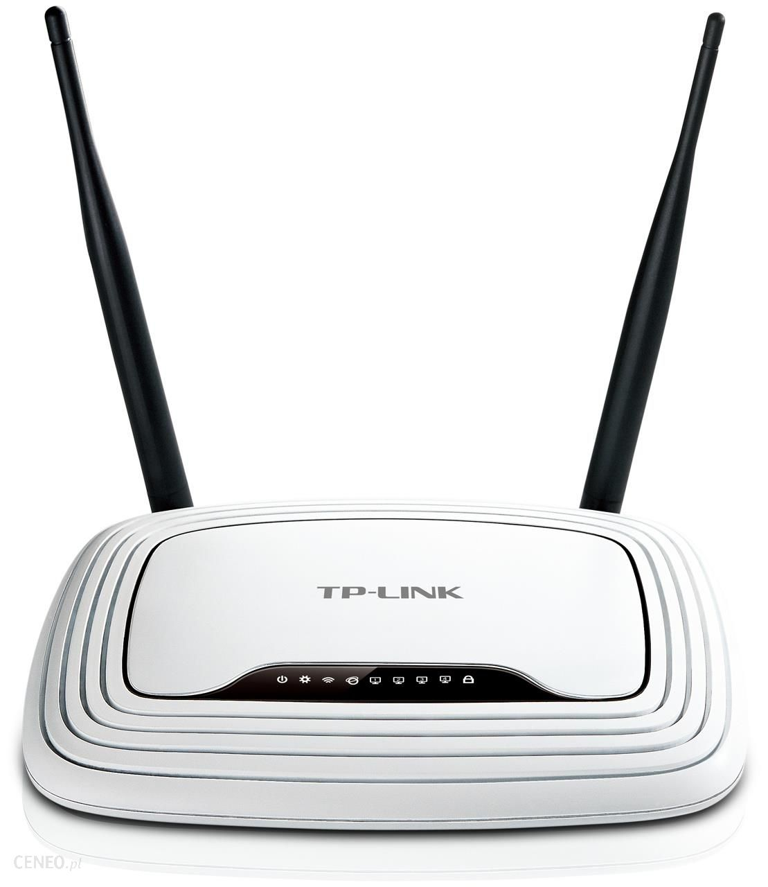
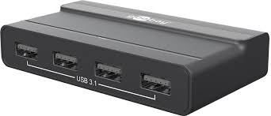
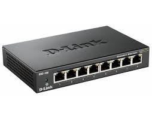
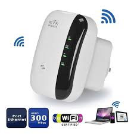
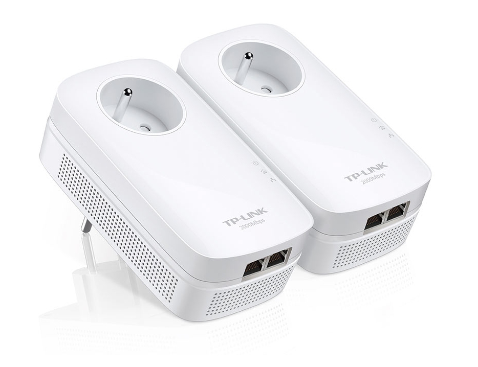
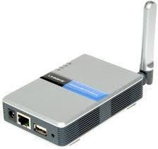
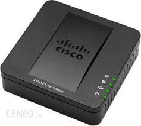
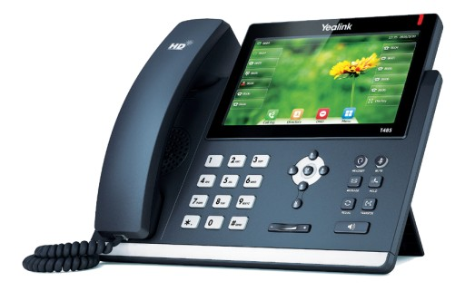

Każdy komputer, który ma pracować w sieci, musi mieć zainstalowany adapter umożliwiający fizyczne przyłączenie okablowania sieciowego lub odbiór danych radiowych. Najczęściej przyjmuje on postać karty rozszerzeń montowanej w gnieździe magistrali PCI, PCI-Express lub też zewnętrznego adaptera USB. Każda karta sieciowa posiada unikatowy adres sprzętowy MAC wykorzystywany do identyfikowania komputera w sieci. Adres MAC składa się z 48 bitów i zapisywany jest szesnastkowo. Pierwsze 24 bity oznaczają producenta, pozostałe 24 są unikatowe dla danego egzemplarza karty.
To urządzenie, które służy do łączenia sieci komputerowych, na przykład sieci Internet z domową siecią lokalną. Za pomocą wbudowanych mechanizmów (np. NAT) ruter kieruje ruchem pakietów w sieci - wyznacza dla nich odpowiednią trasę. To właśnie od procesu trasowania (ang. routing) wzięła się nazwa urządzenia.
Dziś już nie stosowane urządzenie sieciowe służące do realizacji połączeń między komputerami w sieciach Ethernet opartych na topologii gwiazdy. Pośrednicząc w połączeniu, rozsyła zapytania do wszystkich komputerów uruchomionych w sieci. Dane trafiają do każdego aktywnego węzła, jednak odpowiada tylko ta maszyna, dla której przeznaczone są dane pakiety, pozostałe ignorują cudze pakiety. W sieciach z koncentratorem dochodzi do nadmiarowej transmisji danych, co sprzyja powstawaniu kolizji, czyli sytuacji w której dwa komputery w tym samym czasie usiłują wysłać pakiet przez łącze. Rozsyłanie danych do wszystkich komputerów w sieci nie sprzyja również bezpieczeństwu - komputer wyposażony w odpowiednio skonfigurowaną kartę sieciową może przechwytywać wszystkie dane przesyłane w danej sieci.
Urządzenie centralne służące do realizacji połączeń między komputerami w sieciach Ethernet opartych na topologii gwiazdy. Przełącznik przechowuje w wewnętrznej pamięci numery MAC interfejsów sieciowych, które są skojarzone z portami RJ-45 do których podłączone są komputery. Dzięki sprawdzeniu adresu każdej ramki danych switch przesyła pakiety tylko do właściwego komputera.
Urządzenie zapewniające bezprzewodowy dostęp do zasobów sieci za pomocą WiFi.
Działa w sposób odwrotny do punktu dostępowego - dzięki niemu sygnał sieci bezprzewodowej możemy zamienić na połączenie kablowe (bo jest potrzebne np. do telewizora z DLNA czy konsoli)
Wzmacniacz sygnału Wi-Fi, który jest tłumiony przez ściany działowe i stropy budynku. Ekspander to specjalny punkt dostępowy zamontowany w miejscu, gdzie macierzysta sieć Wi-Fi jeszcze jest dostępna. Stworzona za pomocą ekspandera sieć jest bliźniacza do już istniejącej, czyli obowiązują w niej te same nazwy, ustawienia i zabezpieczenia.
Pozwalają przesyłać sygnał sieci poprzez istniejącą np. w mieszkaniu instalację elektryczną. Potrzebne są dwa adaptery, najlepiej w standardzie HomePlug AV. Wystarczy jeden adapter podłączyć do gniazdka w pobliżu rutera, a drugi - obok urządzenia z portem RJ-45. Następnie skrętką podłączamy urządzenia do adapterów. Teoretycznie standard HomePlug AV pozwala na przesyłanie danych z prędkością do 200 Mb/s. W praktyce będzie to do 100 Mb/s. Na szybkość transmisji ma wpływ: jakość instalacji elektrycznej, długość przewodów, obciążenie prądowe instalacji elektrycznej. Za pomocą tej technologii nie udostępnimy łącza internetowego np. sąsiadowi - licznik energii elektrycznej jest dla przesyłanych danych zaporą nie do pokonania.
To po prostu serwer, który - jak to mówimy - udostępnia usługę drukowania. Pod tym pojęciem rozumiemy oczywiście samo drukowanie, ale nie tylko - serwer potrafi kolejkować przychodzące do wydruku pliki, formatować odpowiednio ich wygląd, jak również prowadzi statystyki i raporty na temat przetwarzanych plików. Serwer wydruku może samodzielnym urządzeniem, pośrednikiem pomiędzy drukarką a komputerami klienckimi (wówczas drukarka nie musi być podłączona do jednego, wybranego komputera).
Urządzenie sieciowe najczęściej wykorzystywane w systemach monitoringu, łączące funkcje kamery i komputera. Urządzenie posiada przypisany adres IP i jest podłączone do sieci. Dzięki temu może pełnić rolę serwera lub klienta FTP, może też wysyłać maile, zarządzać alarmami, wysyłać logi na stronę www etc. Kamera IP nie potrzebuje komputera do działania, tak jak wymaga tego zwykła kamera internetowa.
Urządzenie sieciowe, które służy do wykonywania połączeń tradycyjnym aparatem telefonicznym (podłączanym złączem RJ-11) za pośrednictwem internetu, a dokładniej mówiąc protokołu VoIP (Voice over Internet Protocol).
Urządzenie sieciowe, które służy do wykonywania połączeń za pośrednictwem internetu, a dokładniej mówiąc protokołu VoIP. Do podłączenia telefonu IP, zamiast tradycyjnego portu RJ-11 używamy ethernetu (RJ-45), wpinając telefon bezpośrednio w sieć. Telefon IP to autonomiczne urządzenie - aby prowadzić rozmowę, telefon IP nie musi być podłączony do komputera. Komputer jest potrzebny jedynie do skonfigurowania telefonu (podobnie jak to bywa z routerami).
| Aplikacji | Pozwala korzystać z sieci jej użytkownikom | Prezentacji | Informuje o formacie danych oraz je koduje | Sesji | Zarządzanie sesjami użytkowników | Transportu | Odpowiada za obsługę komunikacji | Sieci | Określa trasę przesyłu danych | Łącza danych | Kontroluje dostęp do medium transmisyjnego | Fizyczna | Koduje dane di postaci bitów i przekazuje do medium |
|---|
| Warstwa Fizyczna | Warstwa łącza danych | Warstwa sieciowa |
|---|---|---|
| Karta Sieciowa | Most | Router |
| Ekspender zasięgu | Przełącznik | |
| Koncentrator |